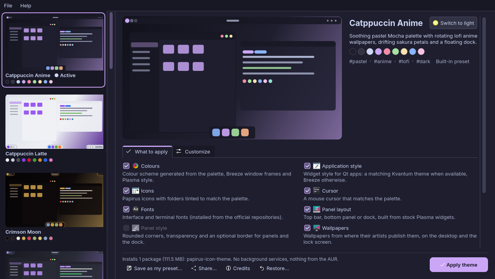

Plasmify
One-click, bloat-free themes for KDE Plasma 6.
Plasmify is a free, open-source desktop app (Python and PyQt6, GPL-3.0-or-later) that gives KDE Plasma 6 a complete, matching look in about a minute: colours, application style, icons, cursor, fonts, panels, wallpapers, window effects, terminal, shell prompt, splash screen and, if you like, the login screen background. Apps can turn to glass, from frosted to clear, and wallpapers can come to life.
Pick a look, untick what you don't want, press Apply theme. Changed your mind? Your settings are backed up before every apply, and Restore… puts them back.

The bloat-free promise
A theme should change how your desktop looks, not what runs on it. Plasmify keeps these promises:
- No background services. No daemon, no autostart entry, no tray icon, no telemetry and no update checks. Plasmify only runs while its window is open or while a command runs in your terminal.
- Nothing from the AUR, COPR or PPAs. Plasmify never adds a repository: packages come from the ones your package manager already uses, and only from a reviewed list. Before you apply, the window tells you exactly which packages are missing and how big they are, for example
Installs 3 packages (9.8 MB)
. Packages you already have are left alone. - No root for theming. Everything except the optional login screen is written to your home folder. Your password is asked for once, through the normal system prompt, when a package is missing, and once more if you decide to change the login screen or restore it.
- Light on disk. Regular fonts plus a 2 MB symbols font for prompt icons, instead of 200 MB Nerd Font packages. Fonts your distribution does not package are downloaded from the Google Fonts repository or the font's own GitHub release into
~/.local/share/fonts. - Stock Plasma only. Panels are built from widgets that ship with Plasma, so Plasma updates should not break them. Panel corners and splash screens are tiny generated files, not extra packages, and living wallpapers are made on your computer and played by Plasma's own wallpaper.
- Credits where due. Themes, cursors and wallpapers are downloaded from where they are published when you apply, never re-hosted; artists are named where known. Each preset lists its sources under Credits.
The one piece of downloaded code is the Polonium tiling script. It is needed when tiling is switched on, by you or by a preset such as Tokyo Night Neon. It is fetched from a pinned release, checked against its SHA-256 and installed in your home folder.
Built-in presets
Fourteen looks: ten dark, two light and two made of glass.
Dark
| Preset | Vibe | Layout |
|---|---|---|
| Catppuccin Anime | Soothing pastels, lofi anime wallpapers with falling sakura petals | Top bar and floating dock |
| Tokyo Night Neon | Deep navy, neon accents, cyberpunk cities | Slim top bar, tiling |
| Nord Minimal | Arctic blues, quiet mountains | Classic bottom panel |
| Gruvbox Retro | Warm earthy tones, pixel art, windows that fall apart | Classic bottom panel |
| Rosé Pine Cozy | Muted pinks, soft illustrations, wobbly windows | Top bar and floating dock |
| Dracula Night | Midnight purple and pink, gothic night illustrations | Islands on top and a dock |
| Everforest Woods | Soft forest greens, misty woods, slower motion | Islands down the left edge |
| Kanagawa Wave | Sumi ink blues, Hokusai's Great Wave, ink prints | Three islands on top, no dock |
| Synthwave Neon | Hot pink and electric cyan, neon retro art with glowing bokeh, wobbly windows, a desktop cube | Islands on top and a dock |
| Crimson Moon | Black, crimson and gold, moonlit art with shooting stars, frosted glass | Islands on top and an auto-hiding dock |
Light
| Preset | Vibe | Layout |
|---|---|---|
| Catppuccin Latte | Catppuccin's soft light flavour, mauve accents, bright painted landscapes | Three islands along the bottom |
| Rosé Pine Dawn | Warm parchment tones, pine blue accents, airy illustrations, gentle motion | Top bar and an auto-hiding dock |
Glass
| Preset | Vibe | Layout |
|---|---|---|
| Glass Night | Clearly see-through, lightly blurred windows and panels in One Dark colours, KDE and elementary night wallpapers | One floating dock |
| Glass Day | Frosted glass in bright One Light colours, airy KDE and elementary wallpapers | Floating top bar and a dock |
Every part of a preset can be switched off on its own: keep your panels but take the colours, or take only the terminal and prompt. Glass, living wallpapers and the showier window effects are ordinary settings, so you can add them to any preset or take them away. You can also build your own look from a wallpaper, from your current desktop or by customizing any preset.
A quick tour
- Getting startedThe gallery, the What to apply tab, Apply, Restore and the live preview.
- CustomizePanels on any edge, glass, window effects, colours, icons, fonts, the terminal logo and more.
- WallpapersYour own slideshow, in your order, brought to life with Shimmer, with a credit for every picture.
- Dark and lightOne click flips the active theme between a dark and a light version.
- Theme studioA complete theme made from a picture, analysed on your computer.
- Sharing presetsSave your look and send it to friends as one
.plasmifyfile. - Backups and restoreYour settings are backed up before every apply; your setup from before Plasmify is always kept.
- Command linePresets, light and dark, settings, backups and sharing from a terminal, with quick
theme,setandresetcommands.
Quick start
- Download and install Plasmify (it installs into your home folder and only asks for your password if Python, PyQt6 or git is missing):
git clone https://github.com/heyquatch/plasmify.git cd plasmify ./install.sh - Open Plasmify from the application menu (you will find it under Settings), or type
plasmify guiin a terminal. - Click a preset in the gallery on the left. The preview shows what you will get.
- Optional: untick parts you want to keep in the What to apply tab, or fine-tune anything in the Customize tab.
- Press Apply theme. Your current setup is backed up first.
- Not your thing? Press Restore… and pick the backup from before.
plasmify restore original brings back your setup from before you first used Plasmify. See Backups and restore.